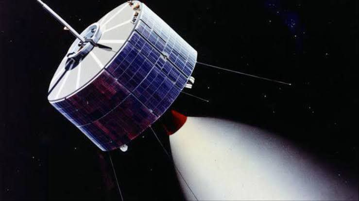

Introduction to EduSpace

Ever wondered what's beyond the blue sky? Then you've come to the right spot where we are committed in creating awareness about space and astronomy!
Ever wondered what's beyond the blue sky? Then you've come to the right spot where we are committed in creating awareness about space and astronomy!
Here is the hub where we start our own space exploration. Stay curious!

1. Hello curious folks! before we dive in to the basics of astronomy, we have to know what we are studying, right? So, what is "Astronomy" anyway??? Well, astronomy is the scientific study of celestial objects, space, and the universe as a whole. It involves observing and understanding phenomena beyond Earth's atmosphere.
2. Astronomy is a branched science, just like a tree. They are sub-fields of astronomy. Branches of Astronomy include... - Observational Astronomy: Focuses on gathering data from celestial objects using telescopes and other instruments. Simply, it's more like watching a "star show" in the night sky... - Theoretical Astronomy: Involves mathematical models and simulations to understand astronomical phenomena. - Astrophysics: This is what we call the physics of astronomy... Combines physics and astronomy to understand the properties and behavior of celestial bodies. - Cosmology: The study of the universe's origin, evolution, and ultimate fate.
3. Space stuff: - Stars: Massive, luminous spheres of plasma (e.g., our Sun). - Planets: Large bodies that orbit stars (e.g., Earth, Mars). - Moons: Natural satellites that orbit planets. - Galaxies: Massive systems containing stars, gas, dust, and dark matter (e.g., Milky Way). - Nebulae: Clouds of gas and dust in space, often the birthplaces of stars. - Black Holes: Regions in space where gravity is so strong that nothing can escape from them.

4. Distance Measurement: - Astronomical Unit (AU): The average distance from the Earth to the Sun ( 93 million miles or 150 million kilometers). - Light-Year: The distance light travels in one year ( 5.88 trillion miles or 9.46 trillion kilometers). I know, mind blown, right?
5. Telescopes: - Instruments used to observe distant celestial objects. They can be optical (visible light) or radio (radio waves).
Now let's see whether your mind can hold after hearing some amazing space facts.
1. The Universe is Vast: The observable universe is about 93 billion light-years in diameter and contains an estimated 100 billion galaxies.
2. Age of the Universe: The universe is approximately 13.8 billion years old, based on measurements of cosmic microwave background radiation.
3. Exoplanets: Thousands of exoplanets (planets outside our solar system) have been discovered, with some potentially in the "habitable zone" where conditions might support life. And did I mention that there are BILLIONS of planets in our galaxy alone( consider a galaxy as a home of countless celestial objects for now)
4. Dark Matter and Dark Energy: About 27% of the universe is dark matter (which does not emit light), and about 68% is dark energy (which is driving the universe's accelerated expansion). Ordinary matter makes up only about 5%!
5. Supernovae: When massive stars exhaust their nuclear fuel, they can explode in a supernova, briefly outshining entire galaxies.
6. Black Holes: The largest known black hole, TON 618, has a mass equivalent to about 66 billion suns!

7. The Milky Way Galaxy: Our galaxy is a barred spiral galaxy with an estimated 100-400 billion stars and a supermassive black hole at its center called Sagittarius A*.
8. Light Pollution: Artificial lighting can hinder our ability to observe celestial objects from Earth, leading to increased efforts for dark sky preservation.
9. Astronomy and Timekeeping: Ancient civilizations used astronomy to develop calendars and track time, leading to the creation of time zones.
10. Humanity’s Quest for Knowledge: Astronomy has driven many technological advancements, including developments in optics, imaging technology, and computer science.
Generally,Astronomy is a fascinating field that combines science, technology, and philosophy. It helps us understand our place in the universe. Whether through telescopes or space missions, the exploration of space continues to reveal new wonders and mysteries. Stay tuned for more updates!
The history of astronomy is a fascinating narrative that stretches back thousands of years, intertwining the evolution of human thought with our quest to understand the cosmos. From the early observations of celestial bodies to the sophisticated models developed by ancient civilizations, the journey of astronomy reflects humanity's enduring curiosity and ingenuity. Let's take a short note about the early history of astronomy, focusing on key civilizations that contributed to its development, their methodologies, and the profound implications of their discoveries.

The roots of astronomy can be traced back to ancient Mesopotamia, often referred to as the cradle of civilization. Around 3000 BCE, the Babylonians began systematically observing celestial phenomena. Their keen observations were motivated by practical needs such as agriculture, navigation, and religious rituals. They developed a lunar calendar based on the phases of the moon, which was essential for agricultural planning and religious festivals. The Babylonians meticulously recorded the movements of planets and stars, creating one of the earliest star catalogs. They identified five planets—Mercury, Venus, Mars, Jupiter, and Saturn—and noted their positions in relation to fixed stars. Their mathematical prowess allowed them to predict celestial events such as eclipses with remarkable accuracy. The use of a base-60 numeral system laid the groundwork for later developments in timekeeping and angular measurement, which are still relevant in modern astronomy.

In ancient Egypt, astronomy was closely linked to religion and agriculture. The Egyptians observed the night sky to align their monumental structures, such as temples and pyramids, with celestial bodies. The most notable example is the Great Pyramid of Giza, which is aligned with incredible precision to true north. The heliacal rising of Sirius, which occurred just before the annual flooding of the Nile River, was particularly significant for the Egyptians. This astronomical event heralded a new agricultural season, emphasizing the interconnectedness of celestial phenomena and daily life. Egyptian astronomers developed a calendar that consisted of 365 days, divided into twelve months, with an additional five days added at the end of the year. This early understanding of timekeeping would influence future civilizations.


The ancient Greeks made monumental contributions to astronomy that laid the foundations for Western scientific thought. Beginning around 600 BCE, philosophers such as Pythagoras and Aristotle sought to understand the cosmos through reason and observation rather than merely recording celestial events. Pythagoras is credited with proposing that celestial bodies were spherical and moved in circular orbits, a revolutionary idea at the time. Aristotle expanded upon these concepts, advocating for a geocentric model where Earth was at the center of the universe. His work influenced astronomical thought for centuries. However, it was Aristarchus of Samos who dared to propose a heliocentric model, suggesting that the Sun, not Earth, was at the center of the universe. Although his ideas were not widely accepted during his lifetime, they would later resurface in the Renaissance. The most influential figure in ancient Greek astronomy was Claudius Ptolemy, whose work "Almagest" synthesized earlier knowledge and presented a comprehensive geocentric model. Ptolemy's system explained the apparent retrograde motion of planets through complex epicycles and dominated astronomical thought for over a millennium.
Fantastic! right? And this is just the beginning. There is a lot more to discover! So stay tuned and curious!
 Alright, so let's talk about our solar system. It's basically our neighborhood in space, and it's pretty cool when you think about it.
Alright, so let's talk about our solar system. It's basically our neighborhood in space, and it's pretty cool when you think about it.
The Sun: The Star of the Show (kind of...)
First up, we got the Sun. It's our star, and it's like a giant, hot ball of gas. Seriously, it's HUGE, like way bigger than the Earth. It's always making energy through something called nuclear fusion (don't worry about what that is). All that energy is what keeps us warm and alive on Earth. The Sun has layers, kind of like a cake, with a super-hot center, and then it has a surface that's still really, really hot. And it's not just sitting there all quiet, sometimes it shoots out energy or gets dark spots. The sun is a really busy star!
The Planets: Our Space Buddies

Then, we've got the planets, all moving around the Sun. We can break them into two groups:
--- The Rocky Ones (Closer to the Sun):
• Mercury: It's super close to the Sun, so it gets crazy hot, then crazy cold. It's a rock with lots of holes (craters).
• Venus: It's about the same size as Earth, but it's super hot because it's got too much air trapping heat, and it also spins backward!
• Earth: That's us! The only place we know of where there’s life. We have air, water, and lots of cool stuff.
• Mars: It's the red one, and it might have had water in the past, but it's kinda dry now.
--- The Gassy Ones (Farther Out):
• Jupiter: It’s HUGE, the biggest planet. It’s made of gas and has a giant storm called the Great Red Spot.
• Saturn: It's got awesome rings made of icy stuff, and many, many moons.
• Uranus: This one is tilted and rotates on its side, it's an ice giant.
• Neptune: It’s the farthest away planet, also an ice giant with crazy winds and a big dark spot like Jupiter’s.
--- Other Stuff: Small but Cool
There are also dwarf planets, which are kinda like planets but a bit smaller, and also the moons that go around the planets. Finally, we got asteroid belts, comets, and space rocks that we can sometimes see in the sky.
Everything in our solar system goes around the Sun because of gravity, a type of invisible force that keeps everything in place. Scientists think it all started from a giant cloud of gas a long, long time ago. And sometimes, things can move around and change, it’s all pretty dynamic. We're still exploring our solar system with spaceships and robots to see what else is out there. It’s amazing to think that there's so much we still have to learn!
So, that's the solar system in a nutshell. It's a mix of planets, stars, and other space rocks, all spinning around our Sun. Pretty cool, right?